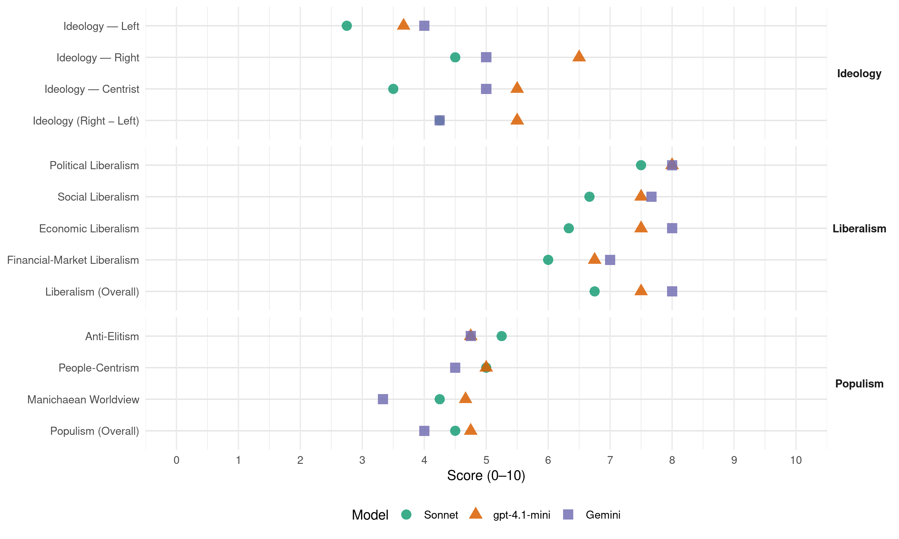

CP (Canada, 2021)
manifesto_id 62623_202109
Get full text: This site shows derived annotations and short verbatim quotes only. The full manifesto text is © Manifesto Project / WZB — obtain it via manifesto-project.wzb.eu using the manifesto_id above.
Headline scores
| Dimension | Sonnet | gpt-4.1-mini | Gemini |
|---|---|---|---|
| Populism (Overall) | 4.5 | 4.8 | 4.0 |
| Anti-Elitism | 5.2 | 4.8 | 4.8 |
| People-Centrism | 5.0 | 5.0 | 4.5 |
| Manichaean Worldview | 4.2 | 4.7 | 3.3 |
| Ideology (Right − Left) | 4.2 | 5.5 | 4.2 |
| Liberalism (Overall) | 6.8 | 7.5 | 8.0 |
| Political Liberalism | 7.5 | 8.0 | 8.0 |
| Social Liberalism | 6.7 | 7.5 | 7.7 |
| Economic Liberalism | 6.3 | 7.5 | 8.0 |
| Financial-Market Liberalism | 6.0 | 6.8 | 7.0 |
Evidence per dimension
Economic Liberalism
Gemini · score 8.0 · verified · chunk 1
“supporting free markets and supporting consumers”
Canada’s Conservatives do not confuse supporting free markets and supporting consumers with doing favours for big businesses, as the Trudeau Liberals have.
Gemini · score 8.0 · verified · chunk 2
“promote competition by: Allowing foreign telecommunications”
practices that hurt consumers. Competition: We will promote competition by: Allowing foreign telecommunications companies to provide services to
Gemini · score 8.0 · verified · chunk 3
“promoting the development of rules of free and open digital trade”
Trade and Technology, including promoting the development of rules of free and open digital trade, advancing economic
Gemini · score 8.0 · verified · chunk 4
“reducing interprovincial trade barriers”
Conservatives estimate that regulatory reform and reducing interprovincial trade barriers will boost Canada’s GDP
gpt-4.1-mini · score 8.0 · verified · chunk 1
“free markets, competition, free enterprise, deregulation”
Canada’s Conservatives will stand up to corporate Canada and reject mergers that substantially reduce competition and lead to layoffs and higher prices. Cut Red Tape - Every year it gets harder to build and grow a business and create jobs because the government puts more and more barriers in the way. It is important to regularly review regulations to eliminate any that are not serving the public interest.
gpt-4.1-mini · score 7.0 · verified · chunk 2
“Promote competition by allowing foreign telecommunications companies to provide services”
We will promote competition by: Allowing foreign telecommunications companies to provide services to Canadian customers, provided that the same treatment is reciprocated for Canadian companies in that company’s country.
gpt-4.1-mini · score 8.0 · verified · chunk 3
“Foster greater economic cooperation among democratic member countries of the OIF”
We will: Foster greater economic cooperation among democratic member countries of the OIF to help this multilateral organization contribute to the realignment of global trade patterns following the COVID-19 crisis.
gpt-4.1-mini · score 7.0 · verified · chunk 4
“free enterprise, tax fairness, and economic growth”
Canada’s Conservatives will ensure that the burden of getting our economy back on track and delivering essential public services does not fall upon those who have been hurt the most. We will provide more funding to the Canada Revenue Agency, increasing to $750 million per year, to fund stronger enforcement of taxation for multinational firms, taxation of large corporations, international taxation, and other tax evasion.
Sonnet · score 7.0 · verified · chunk 1
“Making Canada the best place to invest”
Making Canada the best place to invest and build a business: The Liberals, NDP, and Greens have actively driven investment out of Canada
Sonnet · score 6.0 · mixed · chunk 2
“promote competition by: Allowing foreign telecommunications companies”
Competition: We will promote competition by: Allowing foreign telecommunications companies to provide services to Canadian customers, provided that the same treatment is reciprocated
Sonnet · score 6.0 · verified · chunk 3
“promoting the development of rules of free and open digital trade”
Trade and Technology, including promoting the development of rules of free and open digital trade, advancing economic opportunities with trusted partners, and removing barriers for Canadian companies.
Sonnet · score 6.0 · verified · chunk 4
“secure a level playing field for Canadian media”
Instead, we will secure a level playing field for Canadian media, ensuring that Canadians are paid fairly for the content they create while encouraging the creation of more Canadian media
Financial-Market Liberalism
Gemini · score 7.0 · verified · chunk 1
“legislation on open banking so that Canadians can connect with fintech”
Canada’s Conservatives will ensure that Canadians get the banking services they need at a price they can afford by: Bringing in legislation on open banking so that Canadians can connect with fintech companies that can give provide a better offer
Gemini · score 7.0 · verified · chunk 2
“legislation on open banking so that Canadians”
price they can afford by: Bringing in legislation on open banking so that Canadians can connect with fintech companies
Gemini · score 7.0 · verified · chunk 3
“greater use of market-based financing vehicles”
scaling the development impact of remittances, and the greater use of market-based financing vehicles.
gpt-4.1-mini · score 7.0 · verified · chunk 1
“Bring manufacturing of critical equipment like PPE and pharmaceuticals back to Canada”
Canada’s Conservatives will: Only pursue free trade agreements with free countries that respect workers’ rights and maintain high environmental standards. Bring manufacturing of critical equipment like PPE and pharmaceuticals back to Canada by ensuring that government and government-funded procurement of these essential products favours Canadian producers. Rebuild our domestic vaccine manufacturing capacity.
gpt-4.1-mini · score 7.0 · verified · chunk 2
“Requiring more transparency for investment management fees”
Requiring more transparency for investment management fees so that seniors and savers don’t get ripped off. This will include requiring the banks to show investment returns net of fees.
gpt-4.1-mini · score 7.0 · verified · chunk 3
“Canada’s Conservatives will increase funding to the Canada Revenue Agency for stronger enforcement”
Canada’s Conservatives will ensure that the burden of getting our economy back on track and delivering essential public services does not fall upon those who have been hurt the most. We will provide more funding to the Canada Revenue Agency, increasing to $750 million per year, to fund stronger enforcement of taxation for multinational firms, taxation of large corporations, international taxation, and other tax evasion.
gpt-4.1-mini · score 6.0 · verified · chunk 4
“Digital Services Tax representing 3% of gross revenue in Canada”
Introduce a Digital Services Tax representing 3% of gross revenue in Canada to make web giants pay their fair share. Significantly reduce the amount of money the government is spending on advertising with big foreign tech companies like Twitter and instead direct federal ad dollars to Canadian media.
Sonnet · score 6.0 · verified · chunk 1
“legislation on open banking”
Bringing in legislation on open banking so that Canadians can connect with fintech companies that can give provide a better offer for banking services
Sonnet · score 6.0 · verified · chunk 2
“legislation on open banking so that Canadians can connect with fintech”
Bringing in legislation on open banking so that Canadians can connect with fintech companies that can give provide a better offer for banking services such as a mortgage, line of credit or credit card.
Sonnet · score 6.0 · verified · chunk 3
“greater use of market-based financing vehicles”
This will involve scaling the development impact of remittances, and the greater use of market-based financing vehicles.
Sonnet · score 6.0 · verified · chunk 4
“digital services tax representing 3% of gross revenue”
Introduce a Digital Services Tax representing 3% of gross revenue in Canada to make web giants pay their fair share.
Political Liberalism
Gemini · score 8.0 · verified · chunk 1
“toughest accountability and transparency laws in Canada’s history”
Canada’s Conservatives will put the country first, by enacting the toughest accountability and transparency laws in Canada’s history. Toughen the Conflict of Interest Act and impose higher penalties
Gemini · score 8.0 · verified · chunk 2
“safeguard our democracy against the whims”
shield illegal behaviour. These measures will safeguard our democracy against the whims of unscrupulous politicians. Fix Access
Gemini · score 8.0 · verified · chunk 3
“democracy, human rights, and the rule of law”
democracy, human rights, and the rule of law. We will: Work with our allies
Gemini · score 8.0 · verified · chunk 4
“Free speech, freedom of expression, and a free press”
What we do not support are restrictions on legitimate freedom of speech. Free speech, freedom of expression, and a free press are fundamental tenets of Canadian law
gpt-4.1-mini · score 8.0 · verified · chunk 1
“enacting the toughest accountability and transparency laws in Canada’s history”
SECURE ACCOUNTABILITY BY ENACTING A NEW ANTI-CORRUPTION LAW TO CLEAN UP THE MESS IN OTTAWA. Canada’s Conservatives will put the country first, by enacting the toughest accountability and transparency laws in Canada’s history. Toughen the Conflict of Interest Act and impose higher penalties; Toughen the Lobbying Act to end abuse by Liberal insiders; and Increase transparency to end Liberal cover-ups.
gpt-4.1-mini · score 7.0 · verified · chunk 2
“Canada’s Conservatives will pass an Anti-Corruption Act to strengthen our legislation on ethics, lobbying, and transparency”
We need stricter laws to require ethics in government, prevent cover-ups, and ensure that lobbying is adequately regulated. Canada’s Conservatives will pass an Anti-Corruption Act to strengthen our legislation on ethics, lobbying, and transparency.
gpt-4.1-mini · score 9.0 · verified · chunk 3
“democracy, human rights, and the rule of law”
democracy, human rights, and the rule of law. We will: Work with our allies to address efforts by China, Russia, Iran, and others actively undermining democratic norms, institutions, and the rule of law.
gpt-4.1-mini · score 8.0 · verified · chunk 4
“Free speech, freedom of expression, and a free press are fundamental”
What we do not support are restrictions on legitimate freedom of speech. Free speech, freedom of expression, and a free press are fundamental tenets of Canadian law and Canadian democracy.
Sonnet · score 7.0 · verified · chunk 1
“toughest accountability and transparency laws”
Canada’s Conservatives will put the country first, by enacting the toughest accountability and transparency laws in Canada’s history.
Sonnet · score 7.0 · verified · chunk 2
“These measures will safeguard our democracy”
Cabinet confidence is meant to ensure good government, not shield illegal behaviour. These measures will safeguard our democracy against the whims of unscrupulous politicians.
Sonnet · score 8.0 · verified · chunk 3
“democracy, human rights, and the rule of law”
Work with our allies to address efforts by China, Russia, Iran, and others actively undermining democratic norms, institutions, and the rule of law.
Sonnet · score 8.0 · verified · chunk 4
“Free speech, freedom of expression, and a free press”
Free speech, freedom of expression, and a free press are fundamental tenets of Canadian law and Canadian democracy. We will oppose government censorship
Liberalism (Overall)
Gemini · score 8.0 · verified · chunk 1
“supporting free markets and supporting consumers”
Canada’s Conservatives do not confuse supporting free markets and supporting consumers with doing favours for big businesses, as the Trudeau Liberals have.
Gemini · score 8.0 · verified · chunk 2
“promote competition by: Allowing foreign telecommunications”
practices that hurt consumers. Competition: We will promote competition by: Allowing foreign telecommunications companies to provide services to
Gemini · score 8.0 · verified · chunk 3
“democracy, human rights, and the rule of law”
democracy, human rights, and the rule of law. We will: Work with our allies
Gemini · score 8.0 · verified · chunk 4
“Free speech, freedom of expression, and a free press”
What we do not support are restrictions on legitimate freedom of speech. Free speech, freedom of expression, and a free press are fundamental tenets of Canadian law
gpt-4.1-mini · score 8.0 · verified · chunk 1
“enacting the toughest accountability and transparency laws in Canada’s history”
SECURE ACCOUNTABILITY BY ENACTING A NEW ANTI-CORRUPTION LAW TO CLEAN UP THE MESS IN OTTAWA. Canada’s Conservatives will put the country first, by enacting the toughest accountability and transparency laws in Canada’s history. Toughen the Conflict of Interest Act and impose higher penalties; Toughen the Lobbying Act to end abuse by Liberal insiders; and Increase transparency to end Liberal cover-ups.
gpt-4.1-mini · score 7.0 · verified · chunk 2
“Canada’s Conservatives will pass an Anti-Corruption Act to strengthen our legislation on ethics, lobbying, and transparency”
We need stricter laws to require ethics in government, prevent cover-ups, and ensure that lobbying is adequately regulated. Canada’s Conservatives will pass an Anti-Corruption Act to strengthen our legislation on ethics, lobbying, and transparency.
gpt-4.1-mini · score 8.0 · verified · chunk 3
“democracy, human rights, and the rule of law”
democracy, human rights, and the rule of law. We will: Work with our allies to address efforts by China, Russia, Iran, and others actively undermining democratic norms, institutions, and the rule of law.
gpt-4.1-mini · score 7.0 · verified · chunk 4
“Free speech, freedom of expression, and a free press are fundamental”
What we do not support are restrictions on legitimate freedom of speech. Free speech, freedom of expression, and a free press are fundamental tenets of Canadian law and Canadian democracy.
Sonnet · score 7.0 · verified · chunk 1
“Making Canada the best place to invest”
Making Canada the best place to invest and build a business: The Liberals, NDP, and Greens have actively driven investment out of Canada
Sonnet · score 6.0 · verified · chunk 2
“safeguard our democracy against the whims”
These measures will safeguard our democracy against the whims of unscrupulous politicians. Fix Access to Information by giving the Commissioner of Information the power to make orders
Sonnet · score 7.0 · verified · chunk 3
“free and open digital trade”
promoting the development of rules of free and open digital trade, advancing economic opportunities with trusted partners, and removing barriers for Canadian companies.
Sonnet · score 7.0 · verified · chunk 4
“Free speech, freedom of expression, and a free press”
Free speech, freedom of expression, and a free press are fundamental tenets of Canadian law and Canadian democracy. We will oppose government censorship
Anti-Elitism
Gemini · score 5.0 · verified · chunk 1
“toughen the Lobbying Act to end abuse by Liberal insiders”
transparency laws in Canada’s history. Toughen the Conflict of Interest Act and impose higher penalties; Toughen the Lobbying Act to end abuse by Liberal insiders; and Increase transparency to end Liberal cover-ups.
Gemini · score 6.0 · verified · chunk 2
“A few giant companies have too much power”
on their mobile phones. A few giant companies have too much power, and Canadians are suffering for it.
Gemini · score 4.0 · verified · chunk 3
“pensioners have priority over corporate elites”
ensure that pensioners have priority over corporate elites in bankruptcy or restructuring.
Gemini · score 4.0 · verified · chunk 4
“ignoring those rich enough to pay”
continues to go after small businesses while ignoring those rich enough to pay for expensive lawyers and accountants.
gpt-4.1-mini · score 7.0 · verified · chunk 1
“enacting the toughest accountability and transparency laws in Canada’s history”
SECURE ACCOUNTABILITY BY ENACTING A NEW ANTI-CORRUPTION LAW TO CLEAN UP THE MESS IN OTTAWA. Canada’s Conservatives will put the country first, by enacting the toughest accountability and transparency laws in Canada’s history. Toughen the Conflict of Interest Act and impose higher penalties; Toughen the Lobbying Act to end abuse by Liberal insiders; and Increase transparency to end Liberal cover-ups.
gpt-4.1-mini · score 3.0 · verified · chunk 2
“A few giant companies have too much power”
Canadians continue to pay some of the highest prices in the world for accessing the internet – both at home and on their mobile phones. A few giant companies have too much power, and Canadians are suffering for it. It’s time for a government that takes the side of consumers.
gpt-4.1-mini · score 3.0 · verified · chunk 3
“Trudeau’s China policy has primarily been more concerned with improving business relations for well-connected Liberals”
The Liberals, NDP, and Greens don’t take these threats seriously. Trudeau’s China policy has primarily been more concerned with improving business relations for well-connected Liberals than with defending Canada’s interests and values.
gpt-4.1-mini · score 6.0 · verified · chunk 4
“stand up for those who don’t have a voice today”
The wealthy, big U.S. tech companies, and large multinationals will always have a voice. Canada’s Conservatives will stand up for those who don’t have a voice today: working and middle-class Canadians, New Canadians, small businesspersons have been hit doubly hard by the COVID crisis.
Sonnet · score 5.0 · verified · chunk 1
“clean up the mess in Ottawa”
SECURE ACCOUNTABILITY BY ENACTING A NEW ANTI-CORRUPTION LAW TO CLEAN UP THE MESS IN OTTAWA. Canada’s Conservatives will put the country first
Sonnet · score 5.0 · verified · chunk 2
“A few giant companies have too much power”
Canadians continue to pay some of the highest prices in the world for accessing the internet. A few giant companies have too much power, and Canadians are suffering for it.
Sonnet · score 4.0 · verified · chunk 3
“pander to the priorities of dictators and despots”
Canada’s Conservatives will prioritize Canadian interests and values at the United Nations, not pander to the priorities of dictators and despots.
Sonnet · score 7.0 · verified · chunk 4
“wealthy, big U.S. tech companies, and large multinationals will always have a voice”
A Detailed Plan to Secure Tax Fairness The wealthy, big U.S. tech companies, and large multinationals will always have a voice. Canada’s Conservatives will stand up for those who don’t have a voice today
Ideology — Centrist
Gemini · score 5.0 · verified · chunk 4
“working and middle-class Canadians”
stand up for those who don’t have a voice today: working and middle-class Canadians, New Canadians, small businesspersons
gpt-4.1-mini · score 5.0 · verified · chunk 1
“Canada is a community. Our goal is the common good of all Canadians”
Canada is a community. Our goal is the common good of all Canadians: a society where everyone can fulfill his or her potential. Our goal is to release the human spirit and potential of individual people, families and groups. To nurture, mobilize, and encourage generosity, individual talent, patriotism, and sense of community.
gpt-4.1-mini · score 4.0 · verified · chunk 2
“It’s time for a government that takes the side of consumers”
Canadians continue to pay some of the highest prices in the world for accessing the internet – both at home and on their mobile phones. A few giant companies have too much power, and Canadians are suffering for it. It’s time for a government that takes the side of consumers.
gpt-4.1-mini · score 6.0 · verified · chunk 3
“Canada’s Conservatives are the party that ended racial discrimination in Canadian immigration”
Canada’s Conservatives are the party that ended racial discrimination in Canadian immigration, the party that streamlined processes for refugees and persecuted minorities, and the party that ensured that those who arrive on our shores have the greatest chance to succeed.
gpt-4.1-mini · score 7.0 · verified · chunk 4
“stand up for those who don’t have a voice today”
The wealthy, big U.S. tech companies, and large multinationals will always have a voice. Canada’s Conservatives will stand up for those who don’t have a voice today: working and middle-class Canadians, New Canadians, small businesspersons have been hit doubly hard by the COVID crisis.
Sonnet · score 3.0 · verified · chunk 1
“a recovery for all Canadians”
We need a recovery for all Canadians in every sector, which our plan will deliver.
Sonnet · score 3.0 · verified · chunk 2
“It’s time for a government that takes the side of consumers”
A few giant companies have too much power, and Canadians are suffering for it. It’s time for a government that takes the side of consumers.
Sonnet · score 3.0 · verified · chunk 3
“govern for all Canadians”
Canada’s Conservatives will govern for all Canadians, which means treating Alberta, Saskatchewan, Manitoba, and British Columbia with respect.
Sonnet · score 5.0 · verified · chunk 4
“working and middle-class Canadians, New Canadians, small businesspersons”
Canada’s Conservatives will stand up for those who don’t have a voice today: working and middle-class Canadians, New Canadians, small businesspersons have been hit doubly hard
Ideology — Left
Gemini · score 4.0 · verified · chunk 1
“time for Conservatives to take inequality seriously”
puts working Canadians at the front of the recovery. You’ll probably notice ideas that you haven’t heard from Conservatives like me before. It’s time for Conservatives to take inequality seriously, because that’s becoming more of a problem
gpt-4.1-mini · score 4.0 · verified · chunk 1
“taking inequality seriously, because that’s becoming more of a problem”
You’ll probably notice ideas that you haven’t heard from Conservatives like me before. It’s time for Conservatives to take inequality seriously, because that’s becoming more of a problem in our country. At heart, I’m an optimist.
gpt-4.1-mini · score 3.0 · verified · chunk 2
“Increasing the maximum fine for price-fixing from $24 million to $100 million”
Canada’s Conservatives will ensure that Canadians pay lower prices for food by: Increasing the maximum fine for price-fixing from $24 million to $100 million and introduce criminal penalties for executives for price-fixing.
gpt-4.1-mini · score 4.0 · verified · chunk 3
“Canada’s Conservatives will double the Disability Supplement in the Canada Workers Benefit”
Canada’s Conservatives will double the Disability Supplement in the Canada Workers Benefit from $713 to $1,500, providing a major boost to lower-income disabled Canadians on top of our increase in the Canada Workers Benefit.
Sonnet · score 3.0 · verified · chunk 1
“take inequality seriously”
It’s time for Conservatives to take inequality seriously, because that’s becoming more of a problem in our country.
Sonnet · score 2.0 · verified · chunk 2
“reject mergers that substantially reduce competition”
We will also stand up to corporate Canada and reject mergers that substantially reduce competition and lead to layoffs and higher prices.
Sonnet · score 2.0 · verified · chunk 3
“make foreign tech companies pay their fair share”
Canada’s Conservatives will make foreign tech companies pay their fair share of taxes including sales tax and a digital services tax
Sonnet · score 4.0 · verified · chunk 4
“wealthy pay their fair share”
Canada’s Conservatives will fix this program and ensure that the wealthy pay their fair share. Making Foreign Multinationals and Big Tech Companies Pay Their Fair Share
Ideology (Right − Left)
Gemini · score 5.0 · verified · chunk 1
“time for Conservatives to take inequality seriously”
puts working Canadians at the front of the recovery. You’ll probably notice ideas that you haven’t heard from Conservatives like me before. It’s time for Conservatives to take inequality seriously, because that’s becoming more of a problem
Gemini · score 5.0 · verified · chunk 2
“housing in Canada is truly for Canadian citizens”
housing market, we will ensure that housing in Canada is truly for Canadian citizens and residents first. The Liberals
Gemini · score 3.0 · verified · chunk 3
“stand up to the Communist government”
Standing Up to China’s Aggression We must stand up to the Communist government of China.
Gemini · score 4.0 · verified · chunk 4
“working and middle-class Canadians”
stand up for those who don’t have a voice today: working and middle-class Canadians, New Canadians, small businesspersons
gpt-4.1-mini · score 6.0 · verified · chunk 1
“enacting the toughest accountability and transparency laws in Canada’s history”
SECURE ACCOUNTABILITY BY ENACTING A NEW ANTI-CORRUPTION LAW TO CLEAN UP THE MESS IN OTTAWA. Canada’s Conservatives will put the country first, by enacting the toughest accountability and transparency laws in Canada’s history. Toughen the Conflict of Interest Act and impose higher penalties; Toughen the Lobbying Act to end abuse by Liberal insiders; and Increase transparency to end Liberal cover-ups.
gpt-4.1-mini · score 4.0 · verified · chunk 2
“A few giant companies have too much power”
Canadians continue to pay some of the highest prices in the world for accessing the internet – both at home and on their mobile phones. A few giant companies have too much power, and Canadians are suffering for it. It’s time for a government that takes the side of consumers.
gpt-4.1-mini · score 6.0 · verified · chunk 3
“Canada’s Conservatives are the party that ended racial discrimination in Canadian immigration”
Canada’s Conservatives are the party that ended racial discrimination in Canadian immigration, the party that streamlined processes for refugees and persecuted minorities, and the party that ensured that those who arrive on our shores have the greatest chance to succeed.
gpt-4.1-mini · score 6.0 · verified · chunk 4
“stand up for those who don’t have a voice today”
The wealthy, big U.S. tech companies, and large multinationals will always have a voice. Canada’s Conservatives will stand up for those who don’t have a voice today: working and middle-class Canadians, New Canadians, small businesspersons have been hit doubly hard by the COVID crisis.
Sonnet · score 4.0 · verified · chunk 1
“Liberals, NDP, and Greens have ruined”
The Liberals, NDP, and Greens have ruined the once-enviable finances of Canada with very little to show for it.
Sonnet · score 4.0 · verified · chunk 2
“Canadians are suffering for it”
A few giant companies have too much power, and Canadians are suffering for it. It’s time for a government that takes the side of consumers.
Sonnet · score 4.0 · verified · chunk 3
“stand up to the Communist government of China”
We must stand up to the Communist government of China. Our quarrel is not with the people of China
Sonnet · score 5.0 · verified · chunk 4
“stand up for those who don’t have a voice today”
Canada’s Conservatives will stand up for those who don’t have a voice today: working and middle-class Canadians, New Canadians, small businesspersons
Ideology — Right
Gemini · score 5.0 · verified · chunk 1
“reduce our reliance on foreign countries like China”
We must never again be caught as unprepared as we were when COVID hit last year. Canada’s Conservatives will make Canada more resilient, reduce our reliance on foreign countries like China, and take seriously our responsibility to protect
Gemini · score 6.0 · verified · chunk 2
“Ban foreign investors not living in”
We will: Ban foreign investors not living in or moving to Canada from buying homes
Gemini · score 4.0 · verified · chunk 3
“stand up to the Communist government”
Standing Up to China’s Aggression We must stand up to the Communist government of China.
gpt-4.1-mini · score 7.0 · verified · chunk 1
“Protecting Jobs and National Security”
Canada’s Conservatives will: Reform Canada’s procurement rules to create a vital national interest category that must be sourced in Canada; Create a strategy to repatriate and diversify supply chains to move them away from China. Protect Canadian intellectual property with a strengthened Investment Canada Act that includes: A presumption against allowing the takeover of Canadian companies by China’s designated state-owned entities; A reformed “net benefits” test to better account for the potential effects of a transaction on the broader innovation ecosystem with a particular focus on protecting intellectual property and human capital; Automatic review of transactions involving sensitive sectors such as defence, artificial intelligence, and rare earth minerals; and A mandatory national security review.
gpt-4.1-mini · score 6.0 · verified · chunk 2
“Ban foreign investors not living in or moving to Canada from buying homes here for a two year period”
To arrest and reverse the inflationary impacts of foreign buyers and speculation in the housing market, we will ensure that housing in Canada is truly for Canadian citizens and residents first. We will: Ban foreign investors not living in or moving to Canada from buying homes here for a two year period after which it will be reviewed.
gpt-4.1-mini · score 7.0 · verified · chunk 3
“We must stand up to the Communist government of China. Our quarrel is not with the people of China”
We must stand up to the Communist government of China. Our quarrel is not with the people of China – part of an ancient civilization that has contributed much to humanity. We stand especially with Chinese Canadians whose contributions to Canada are immeasurable and who are enduring an appalling rise in anti-Asian hate and discrimination.
gpt-4.1-mini · score 6.0 · verified · chunk 4
“opposed Justin Trudeau’s attempt to create a national speech regulator”
We will oppose government censorship of material that is not criminal in nature merely because some may find it to be offensive. Consequently, we have opposed Justin Trudeau’s attempt to create a national speech regulator for social media. Unlike the Liberals, we will not use the power of government to censor those we disagree with.
Sonnet · score 4.0 · verified · chunk 1
“reduce our reliance on foreign countries like China”
Canada’s Conservatives will make Canada more resilient, reduce our reliance on foreign countries like China, and take seriously our responsibility
Sonnet · score 5.0 · verified · chunk 2
“Ban foreign investors not living in or moving to Canada”
We will: Ban foreign investors not living in or moving to Canada from buying homes here for a two year period after which it will be reviewed.
Sonnet · score 5.0 · verified · chunk 3
“end illegal border crossings and unofficial points of entry”
Canada’s Conservatives will end illegal border crossings and unofficial points of entry like Roxham Road.
Sonnet · score 4.0 · verified · chunk 4
“Canadians and Canadians alone determine our nation’s domestic tax policy”
But that doesn’t mean giving up sovereignty over our tax system. Canadians and Canadians alone determine our nation’s domestic tax policy and rates.
Manichaean Worldview
Gemini · score 4.0 · verified · chunk 1
“to end Liberal cover-ups”
Toughen the Conflict of Interest Act and impose higher penalties; Toughen the Lobbying Act to end abuse by Liberal insiders; and Increase transparency to end Liberal cover-ups.
Gemini · score 4.0 · verified · chunk 2
“shield government insiders from criminal investigation”
ensure that Cabinet Confidence can no longer be used to shield government insiders from criminal investigation. Where the government does not
Gemini · score 2.0 · verified · chunk 3
“pander to the priorities of dictators”
interests and values at the United Nations, not pander to the priorities of dictators and despots.
gpt-4.1-mini · score 6.0 · verified · chunk 1
“end Liberal cover-ups”
Toughen the Lobbying Act to end abuse by Liberal insiders; and Increase transparency to end Liberal cover-ups. SECURE MENTAL HEALTH THROUGH OUR CANADA MENTAL HEALTH ACTION PLAN. The last year has made clear the mental health crisis we face.
gpt-4.1-mini · score 2.0 · verified · chunk 2
“The Liberals are on record stating, “we’re a very safe market for foreign investment but we’re not a great market for Canadians”
To arrest and reverse the inflationary impacts of foreign buyers and speculation in the housing market, we will ensure that housing in Canada is truly for Canadian citizens and residents first. The Liberals are on record stating, “we’re a very safe market for foreign investment but we’re not a great market for Canadians looking for choices around housing.” This must change.
gpt-4.1-mini · score 6.0 · verified · chunk 3
“Oppose the world’s dictators, advocate for the most marginalized, and be a powerful voice for universal values”
Canada’s Conservatives will prioritize Canadian interests and values at the United Nations, not pander to the priorities of dictators and despots. We will: Oppose the world’s dictators, advocate for the most marginalized, and be a powerful voice for universal values.
gpt-4.1-mini · score 5.0 · mixed · chunk 4
“Justin Trudeau’s attempt to create a national speech regulator”
We will oppose government censorship of material that is not criminal in nature merely because some may find it to be offensive. Consequently, we have opposed Justin Trudeau’s attempt to create a national speech regulator for social media. Unlike the Liberals, we will not use the power of government to censor those we disagree with.
Sonnet · score 4.0 · verified · chunk 1
“Liberals, NDP, and Greens have ruined”
The Liberals, NDP, and Greens have ruined the once-enviable finances of Canada with very little to show for it.
Sonnet · score 4.0 · verified · chunk 2
“They don’t believe the rules apply to them”
They interfered in the judicial process to help their well-connected friends. They don’t believe the rules apply to them. We need stricter laws to require ethics in government
Sonnet · score 4.0 · verified · chunk 3
“Liberals prioritize politics over nation-building”
The Liberals prioritize politics over nation-building. Their words have not matched their deeds, and their failures are shown by the absence of meaningful results.
Sonnet · score 5.0 · verified · chunk 4
“path of failure and soaring debt with a Liberal government”
to continue down the path of failure and soaring debt with a Liberal government that will spend and spend without a plan for growth. Or Canadians can choose a Conservative Government
People-Centrism
Gemini · score 5.0 · verified · chunk 1
“puts working Canadians at the front of the recovery”
So, while the plan is detailed, the priorities are actually quite simple. Next, it’s a plan for all Canadians. It’s one that puts working Canadians at the front of the recovery. You’ll probably notice ideas that you haven’t heard
Gemini · score 5.0 · verified · chunk 2
“serves the interests of everyday Canadians”
We need a real estate market that serves the interests of everyday Canadians: the young family who needs
Gemini · score 3.0 · verified · chunk 3
“working and middle-class Canadians”
stand up for those who don’t have a voice today: working and middle-class Canadians, New Canadians
Gemini · score 5.0 · verified · chunk 4
“stand up for those who don’t have a voice”
Canada’s Conservatives will stand up for those who don’t have a voice today: working and middle-class Canadians
gpt-4.1-mini · score 6.0 · verified · chunk 1
“Canada is a community. Our goal is the common good of all Canadians”
Canada is a community. Our goal is the common good of all Canadians: a society where everyone can fulfill his or her potential. Our goal is to release the human spirit and potential of individual people, families and groups. To nurture, mobilize, and encourage generosity, individual talent, patriotism, and sense of community.
gpt-4.1-mini · score 2.0 · verified · chunk 2
“Canadians pay some of the highest prices”
Canadians continue to pay some of the highest prices in the world for accessing the internet – both at home and on their mobile phones. A few giant companies have too much power, and Canadians are suffering for it.
gpt-4.1-mini · score 5.0 · verified · chunk 3
“Canada remains a beacon of the best humanity has to offer, providing safety and opportunity to all”
Nowhere on earth is there more equality of opportunity, embrace of diversity, or success for newcomers than Canada. Canada remains a beacon of the best humanity has to offer, providing safety and opportunity to all.
gpt-4.1-mini · score 7.0 · verified · chunk 4
“working and middle-class Canadians, New Canadians, small businesspersons”
Canada’s Conservatives will stand up for those who don’t have a voice today: working and middle-class Canadians, New Canadians, small businesspersons have been hit doubly hard by the COVID crisis. They’ve suffered disproportionately, far more than those with greater means.
Sonnet · score 5.0 · verified · chunk 1
“puts working Canadians at the front”
It’s one that puts working Canadians at the front of the recovery. You’ll probably notice ideas that you haven’t heard from Conservatives like me before.
Sonnet · score 5.0 · verified · chunk 2
“real estate market that serves the interests of everyday Canadians”
We need a real estate market that serves the interests of everyday Canadians: the young family who needs more space for their kids, the recent university grad trying to find an apartment
Sonnet · score 4.0 · verified · chunk 3
“stand up for those who don’t have a voice today”
Canada’s Conservatives will stand up for those who don’t have a voice today: working and middle-class Canadians, New Canadians, small businesspersons
Sonnet · score 6.0 · verified · chunk 4
“stand up for those who don’t have a voice today”
Canada’s Conservatives will stand up for those who don’t have a voice today: working and middle-class Canadians, New Canadians, small businesspersons
Populism (Overall)
Gemini · score 5.0 · verified · chunk 1
“puts working Canadians at the front of the recovery”
So, while the plan is detailed, the priorities are actually quite simple. Next, it’s a plan for all Canadians. It’s one that puts working Canadians at the front of the recovery. You’ll probably notice ideas that you haven’t heard
Gemini · score 5.0 · verified · chunk 2
“takes the side of consumers”
It’s time for a government that takes the side of consumers. Canada’s Conservatives will take real action
Gemini · score 3.0 · verified · chunk 3
“pensioners have priority over corporate elites”
ensure that pensioners have priority over corporate elites in bankruptcy or restructuring.
Gemini · score 3.0 · verified · chunk 4
“stand up for those who don’t have a voice”
Canada’s Conservatives will stand up for those who don’t have a voice today: working and middle-class Canadians
gpt-4.1-mini · score 6.0 · verified · chunk 1
“enacting the toughest accountability and transparency laws in Canada’s history”
SECURE ACCOUNTABILITY BY ENACTING A NEW ANTI-CORRUPTION LAW TO CLEAN UP THE MESS IN OTTAWA. Canada’s Conservatives will put the country first, by enacting the toughest accountability and transparency laws in Canada’s history. Toughen the Conflict of Interest Act and impose higher penalties; Toughen the Lobbying Act to end abuse by Liberal insiders; and Increase transparency to end Liberal cover-ups.
gpt-4.1-mini · score 2.0 · verified · chunk 2
“A few giant companies have too much power”
Canadians continue to pay some of the highest prices in the world for accessing the internet – both at home and on their mobile phones. A few giant companies have too much power, and Canadians are suffering for it. It’s time for a government that takes the side of consumers.
gpt-4.1-mini · score 5.0 · verified · chunk 3
“Trudeau’s China policy has primarily been more concerned with improving business relations for well-connected Liberals”
The Liberals, NDP, and Greens don’t take these threats seriously. Trudeau’s China policy has primarily been more concerned with improving business relations for well-connected Liberals than with defending Canada’s interests and values.
gpt-4.1-mini · score 6.0 · verified · chunk 4
“stand up for those who don’t have a voice today”
The wealthy, big U.S. tech companies, and large multinationals will always have a voice. Canada’s Conservatives will stand up for those who don’t have a voice today: working and middle-class Canadians, New Canadians, small businesspersons have been hit doubly hard by the COVID crisis.
Sonnet · score 4.0 · verified · chunk 1
“clean up the mess in Ottawa”
SECURE ACCOUNTABILITY BY ENACTING A NEW ANTI-CORRUPTION LAW TO CLEAN UP THE MESS IN OTTAWA. Canada’s Conservatives will put the country first
Sonnet · score 4.0 · verified · chunk 2
“stand up to corporate Canada”
We will also stand up to corporate Canada and reject mergers that substantially reduce competition and lead to layoffs and higher prices.
Sonnet · score 4.0 · verified · chunk 3
“Trudeau’s China policy has primarily been more concerned”
Trudeau’s China policy has primarily been more concerned with improving business relations for well-connected Liberals than with defending Canada’s interests and values.
Sonnet · score 6.0 · verified · chunk 4
“wealthy, big U.S. tech companies, and large multinationals will always have a voice”
A Detailed Plan to Secure Tax Fairness The wealthy, big U.S. tech companies, and large multinationals will always have a voice. Canada’s Conservatives will stand up for those who don’t have a voice today
Social Liberalism